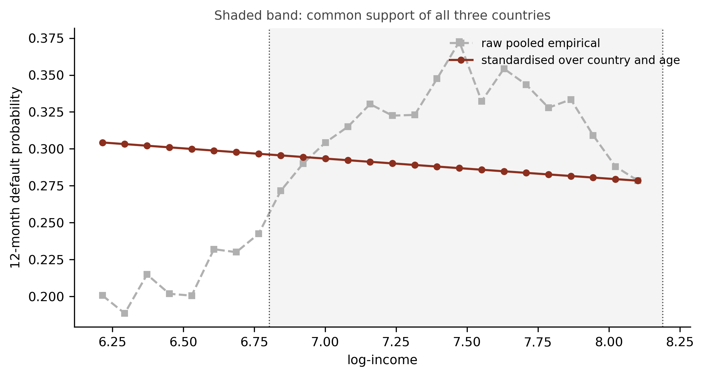

Credit Lecture C1: Interaction, Confounding and What a Coefficient Means
Deep Learning for Actuarial Modelling: a credit risk companion
Author
Mario Ervedosa
Published
September 2, 2026
Abstract
Credit lecture 1 showed the Bondora income gradient pointing the wrong way, named the mechanism composition, fixed it by adding country to the model, and moved on. That was a causal argument, made correctly and without a single causal word. This lecture supplies the vocabulary and then spends it. It separates interaction from effect modification, shows that a claim of no interaction is always a claim about one scale, and derives an adjustment set from a graph rather than from predictive lift, which separates the confounder lecture 1 adjusted for from the mediator it deliberately excluded. It then walks lecture 1’s own GLM3 coefficient table asking of each row what would have to hold for it to be read as an effect, standardises the fitted model over the observed country distribution to obtain the marginal income curve lecture 1 said could not be assembled from marginal rates, and closes on how much unmeasured confounding would be needed to overturn the result.
1 The argument lecture 1 already made
Credit lecture 1 put a figure on screen that no underwriter believes. Default risk rose with declared income across most of the Bondora book, from below 20 per cent at the bottom to peaks above 34 per cent. The lecture then split the same data by country, found the rate falling with income inside Estonia, Finland and Spain separately, and explained the pooled curve as composition: the two high-income markets carry default rates of 38 and 55 per cent against Estonia’s 17. Adding Country to the regression flipped the income coefficient negative, and the lecture recorded that the wrongly signed coefficient had been evidence about the portfolio’s composition all along.
Every step of that is right. It is also a causal argument, and lecture 1 makes it without using the word. Reading the flipped coefficient as “country is the real driver and income was standing in for it” makes a claim about what would happen under intervention, where the data on their own support only a claim about association. So does the decision to leave Interest out because it is “an output of the lender’s previous risk assessment rather than a property of the borrower”. So is the implicit promise that the GLM3 income coefficient, now correctly signed, may be read as the effect of income.
Epidemiology has spent fifty years on exactly this problem, because a study of diet and heart disease has the same shape as a study of income and default and rather more at stake. This lecture takes the machinery that field built and points it at the Bondora book. It answers three questions a credit modeller asks constantly and usually answers by habit: what an interaction claim actually asserts and on which scale, which covariates belong in the model, and what a fitted coefficient may be quoted as.
1.1 What this lecture owns
C1 owns whether a covariate belongs in a model and what its coefficient may be read as. Lecture 1 keeps its Simpson’s paradox demonstration, which is doing work where it stands and gains only a forward reference. Lecture 6 owns how a covariate enters a model once inclusion has been decided, meaning encodings, target encoding, leakage and embeddings. Hence lecture 6 asks how and this lecture asks whether.
Two things are deliberately named and not demonstrated. Propensity scores and instrumental variables are defined where they arise and left there, because the Bondora book carries no treatment variable and staging one would teach the mechanics of a method nobody should apply to this portfolio. Attribution read causally, meaning SHAP, LocalGLMnet and ICE marginal effects against the fallacy of section 6, belongs beside the course’s LocalGLMnet lectures and is deferred to C2.
1.2 Notation
One rule, because the lecture makes both kinds of claim and mixing them is the error the subject is about.
An estimand carries a counterfactual superscript. Writing lecture 1’s response as \(D^{(k)}_i\), the \(k\)-month default indicator for loan \(i\), and its covariates as \(\boldsymbol{X}_i\), the counterfactual \(D^{(k),\,a}_i\) is the indicator loan \(i\) would have shown under intervention \(a\) on the covariate under discussion. Identification, by contrast, is argued on a graph, in the vocabulary of paths, arrowheads, colliders and blocking. Consequently “adjust for Country” is never written as an intervention on Country: it is conditioning on a set that blocks a backdoor path. Keeping those two apart is the entire content of section 3, so the notation has to respect it from the start. There is no do-notation in this lecture, since the vault article the sources extend already speaks counterfactuals and two notations for one idea cost more than either saves.
2 Setting up
We rebuild lecture 1’s modelling frame exactly, so that every number below is comparable with one the reader has already seen. The table is bondora_pd.parquet, the fixed-horizon frame of 148,733 seasoned loans and a twelve-month default flag, of which 148,437 sit in the three markets lecture 1 used.
148,437 loans across ['EE', 'FI', 'ES']
shape: (3, 4)
┌─────────┬───────┬──────────────┬──────────────────┐
│ Country ┆ n ┆ default rate ┆ median logIncome │
│ --- ┆ --- ┆ --- ┆ --- │
│ str ┆ u32 ┆ f64 ┆ f64 │
╞═════════╪═══════╪══════════════╪══════════════════╡
│ EE ┆ 86288 ┆ 0.1705 ┆ 6.908 │
│ FI ┆ 35879 ┆ 0.3784 ┆ 7.602 │
│ ES ┆ 26270 ┆ 0.5543 ┆ 7.184 │
└─────────┴───────┴──────────────┴──────────────────┘
Estonia carries 58.1 per cent of the risk set at a 17.1 per cent default rate, Finland 24.2 per cent at 37.8 per cent, and Spain 17.7 per cent at 55.4 per cent. Those three pairs of numbers generate everything that follows, because the country with the lowest risk also has the lowest median income.
3 The three identification conditions on a credit portfolio
A randomised experiment supports a causal claim by design, since randomisation makes the treated and untreated groups comparable in expectation. An observational credit portfolio has to assume what randomisation would have delivered, and that assumption decomposes into three conditions. Each has a credit failure mode, and they are not equally hard to check.
Exchangeability requires that, conditional on the measured covariates, the loans at one income level be comparable in their counterfactual outcomes to the loans at another. Formally, \(D^{(k),\,a}_i\) is independent of the observed income level given \(\boldsymbol{X}_i\). It fails in credit whenever an unmeasured borrower characteristic drives both the covariate and the outcome, and the standard case is unrecorded financial sophistication: a borrower who understands amortisation both declares income accurately and repays reliably, so a model without that variable attributes its effect to whatever correlates with it.
Positivity requires a non-zero probability of every covariate level within every stratum being conditioned on. This is the tractable one, because it is a property of the table rather than of the world, so it can be counted. A credit model violates it silently whenever a segment carries no variation in a driver, and the failure shows up as a coefficient estimated from a handful of loans, or from none.
qs = np.quantile(model_dat["logIncome"], [0.2, 0.4, 0.6, 0.8])banded = model_dat.with_columns( q=pl.col("logIncome").cut(list(qs), labels=["Q1", "Q2", "Q3", "Q4", "Q5"]))cells = (banded.group_by(["q", "Country"]).agg(pl.len().alias("n")) .pivot(on="Country", index="q", values="n").sort("q"))print(cells)print(f"\nthinnest cell: {min(cells[c].min() for c in COUNTRIES):,} loans")
Positivity holds here, and comfortably. All fifteen cells are populated and the thinnest, Finland’s bottom pooled-income quintile, carries 630 loans against Estonia’s 30,218 in the same band. Therefore the standardisation of section 7 is supportable, which was not a foregone conclusion: the equivalent macroeconomic exercise in lecture R1 collapsed on exactly this condition and had to retreat to Estonia alone. The caveat sits at the two ends of the range rather than in the middle, and section 7 measures it.
Consistency requires that the intervention be well defined before the counterfactual can be linked to the observed data, and it is the condition credit work assumes away most often. “Reduce the interest rate” sounds like one intervention and is at least three: reprice at origination, restructure mid-life, or forbear after arrears. Each implies a different counterfactual, each is available to a different population, and a coefficient on Interest answers none of them on its own. The same objection applies with more force to age and to country, where the intervention is unavailable altogether, which is the point section 4 turns on.
NoteNamed here, and deliberately not demonstrated
Two families of method exist for the case where exchangeability cannot be assumed on the measured covariates.
A propensity score is the conditional probability of receiving the treatment given the covariates. Matching, weighting or regressing on it reduces a many-covariate balancing problem to a one-dimensional one, and it buys nothing that conditioning on the covariates themselves would not, since it still assumes no unmeasured confounder.
An instrumental variable is a variable affecting the treatment, affecting the outcome only through the treatment, and sharing no cause with the outcome. Where a credible instrument exists, it identifies an effect without assuming exchangeability on measured covariates.
Neither is demonstrated in this lecture, because the Bondora book carries no treatment variable. Every covariate in it is a borrower characteristic or a platform-set price, so a staged demonstration would teach the mechanics of a method that should not be applied to this portfolio, which is a worse outcome than leaving the mechanics to the reference.
4 Interaction, effect modification, and the scale nobody states
Lecture 1 says that covariates interact, so marginal default rates cannot simply be combined. The statement is correct and the word is wrong, and the difference decides what the finding licenses.
Interaction concerns the joint effect of intervening on two covariates. Effect modification concerns the effect of intervening on one covariate varying across strata of a second covariate nobody intervenes on. Either can hold with the other absent, and there are settings where one is assessable and the other is not. Applied to lecture 1’s figure, nobody intervenes on a borrower’s country of residence, so what the figure shows is effect modification: the income gradient differs across markets. A genuine interaction claim in credit needs two things a lender could actually do, e.g. change the advance and change the term together, and those are rarer in a scorecard than the word suggests.
The distinction is worth the pedantry because the two claims support different actions. Effect modification tells the lender where an existing model is stronger or weaker, which is a segmentation finding. Interaction tells the lender what happens when two levers are pulled at once, which is a pricing or policy finding. A model document that reports the first and is read as the second has overclaimed, and the reader has no way to tell from the coefficient table.
4.1 Interaction is a claim about a scale, and the scale is usually unstated
Here is the result that unsettles most credit modellers, and it takes four lines of arithmetic to see. Fit a logit with logIncome and Country and no interaction term at all. By construction the odds ratio for income is identical in every country. The risk differences are not.
no_int = smf.glm("default_12m ~ logIncome + Country", data=dat, family=sm.families.Binomial()).fit()lo, hi = np.percentile(dat["logIncome"], [25, 75])rows = []for c in COUNTRIES: p_lo =float(no_int.predict(pd.DataFrame({"logIncome": [lo], "Country": [c]})).iloc[0]) p_hi =float(no_int.predict(pd.DataFrame({"logIncome": [hi], "Country": [c]})).iloc[0]) odds = (p_hi / (1- p_hi)) / (p_lo / (1- p_lo)) rows.append({"country": c, "p(Q1 income)": p_lo, "p(Q3 income)": p_hi,"risk difference": p_hi - p_lo, "odds ratio": odds})print(f"comparing log-income {lo:.3f} with {hi:.3f}, i.e. a {np.exp(hi - lo):.2f}x income ratio\n")print(pd.DataFrame(rows).set_index("country").round(4))
comparing log-income 6.766 with 7.550, i.e. a 2.19x income ratio
p(Q1 income) p(Q3 income) risk difference odds ratio
country
EE 0.1732 0.1602 -0.0130 0.9107
FI 0.4031 0.3808 -0.0223 0.9107
ES 0.5681 0.5450 -0.0231 0.9107
The odds ratio is 0.9107 in all three countries, to four decimal places, because a logit link makes the model multiplicative in the odds and the income coefficient is shared. Move to the risk-difference scale and the same fitted model gives -1.30 percentage points in Estonia, -2.23 in Finland and -2.31 in Spain. The Spanish risk difference is 1.8 times the Estonian one. So this model carries exactly zero interaction on the multiplicative scale and material interaction on the additive scale, and it was never told about either.
Consequently a statement that a model contains no interaction is incomplete until the scale is named. The general version is sharper still: provided both covariates affect the outcome, there will always be interaction on at least one scale, and the only way to have none on any scale is for one covariate to have no effect whatever. Interaction on some scale is therefore guaranteed in any model whose covariates all matter, and reporting its presence conveys nothing. What conveys something is which scale was tested and why that scale answers the question asked.
Practice has settled on the multiplicative scale by convenience rather than by argument, since logistic regression is easy to fit and standard software returns a multiplicative interaction estimate with a confidence interval for free, while additive measures need extra work in most packages. The cost is measurable in the field that studies it: across a random sample of 25 cohort and 50 case-control studies drawn from the five highest-ranked epidemiology journals, 61 per cent assessed interaction at least as a secondary analysis and exactly one reported an additive measure. Credit modelling inherits the same default through the same link function, so the same silence is likely here and nobody has counted.
TipWhat a validator should ask to see
Four items make an interaction or effect-modification claim assessable. Anything less leaves it unassessable rather than wrong, which is a worse position for a reviewer, since there is nothing to disagree with.
The measures for each combination of the two variables, against a single reference cell taken as the lowest-risk combination.
The measures for the first variable within strata of the second, and for an interaction claim, for the second within strata of the first as well.
The interaction measures on the additive and the multiplicative scale.
The confounders adjusted for, listed. For an interaction claim, both sets.
The fourth is the one usually missing and it matters most, because the adjustment set that identifies one of the two effects need not identify the other. Section 6 is what that costs.
5 Choosing an adjustment set
Which covariates a model should control for is usually decided by predictive lift, and the decision is defensible right up to the moment a coefficient is quoted as a driver. A causal diagram turns the question into a derivation. Arrows encode the assumed causal relations; paths through the diagram are then read to decide which conditioning sets remove confounding and which create it.
Lecture 1’s structure is the textbook case, and drawing it takes three arrows.
Lecture 1’s confounding structure. Country is a common cause of income and of default, so the path from income back through country and on to default is open, and the marginal income gradient carries it. Conditioning on country blocks that path and leaves the direct path intact.
Read the diagram in the vocabulary the sources use. A backdoor path from income to default is one leaving income through an arrowhead pointing into it, and here there is exactly one, back through Country. A path is open at ordinary variables and closed at a collider, meaning a variable the path enters and leaves through arrowheads. Country is not a collider on this path, so the path is open, and the pooled income gradient is the sum of the direct effect and whatever the open backdoor path transmits. Conditioning on {Country} blocks it, which is precisely what GLM3 did and why the coefficient’s sign changed.
Crucially, being a collider is a property of a path rather than of a variable. The same variable can be a collider on one path and an ordinary node on another. Hence “control for everything available” is a decision that introduces bias in identifiable cases, which section 5.3 puts a number on.
5.1 Three roles, and lecture 1 already had two of them
A covariate can enter for three quite different reasons, and only the first improves the estimate.
Country is a confounder: a common cause of the covariate of interest and the outcome. Conditioning on it is required, and lecture 1 does so.
Interest is a mediator, and lecture 1 excluded it with the right instinct and a different word. Its argument was that the contractual rate is “an output of the lender’s previous risk assessment rather than a property of the borrower”. In graph terms the rate sits on the path from the borrower’s characteristics to default, so conditioning on it removes part of the very effect the model is trying to estimate. Furthermore, Interest is simultaneously a collider on a second path, since the platform’s unobserved view of the borrower’s risk points into the rate and also into default. One variable, two roles, two independent reasons to leave it out. That is the collider-relative-to-a-path rule doing real work on a real portfolio.
The cost of conditioning on it is measurable, and it is not where a reader would look for it.
The income coefficient barely moves, losing 3.2 per cent of its magnitude. The country coefficients collapse. Spain falls from +1.905 to +1.254 on the logit scale and Finland from +1.253 to +0.951, so roughly a third of the estimated Spanish country effect and a quarter of the Finnish one were travelling through the price. That is the mediator argument made quantitative: the platform had already priced the country risk into the coupon, and conditioning on the coupon takes the credit for it away from the country. A modeller who added Interest looking at the income row would have seen almost nothing change and concluded the addition was harmless.
5.2 What a collider costs, with numbers
A confounder omitted biases the estimate. A collider included biases it too, and the second is the less familiar failure. To make the sign visible we construct the collider explicitly rather than hunt for one, because a constructed example proves the mechanism where a found one only illustrates it.
Suppose the lender holds an operational affordability review flag, raised with high probability when declared income is low and also raised when the loan goes bad. Both arrows point into the flag, so it is a collider on the path from income to default. Most lenders hold several fields of exactly this shape, e.g. a collections referral, a hardship contact, or a manual underwrite override, and all of them are recorded after the covariates and around the outcome.
rng = np.random.default_rng(20260902)low_income = (dat["logIncome"] < dat["logIncome"].quantile(0.40)).astype(int)p_review = np.clip(0.10+0.55* low_income +0.55* dat["default_12m"], 0, 1)dat["Review"] = (rng.random(len(dat)) < p_review).astype(int)print(f"review flag raised on {dat['Review'].mean():.1%} of loans")print(f" by income : {dat.loc[low_income ==0, 'Review'].mean():.3f} high"f" vs {dat.loc[low_income ==1, 'Review'].mean():.3f} low")print(f" by outcome : {dat.loc[dat.default_12m ==0, 'Review'].mean():.3f} good"f" vs {dat.loc[dat.default_12m ==1, 'Review'].mean():.3f} bad")correct = smf.glm("default_12m ~ logIncome + Country", data=dat, family=sm.families.Binomial()).fit()with_col = smf.glm("default_12m ~ logIncome + Country + Review", data=dat, family=sm.families.Binomial()).fit()restricted = smf.glm("default_12m ~ logIncome + Country", data=dat[dat.Review ==1], family=sm.families.Binomial()).fit()out = pd.DataFrame({"logIncome coef": [correct.params["logIncome"], with_col.params["logIncome"], restricted.params["logIncome"]],"odds ratio": [np.exp(correct.params["logIncome"]), np.exp(with_col.params["logIncome"]), np.exp(restricted.params["logIncome"])],"n": [correct.nobs, with_col.nobs, restricted.nobs],}, index=["adjust for {Country}", "adjust for {Country, Review}", "restrict to Review == 1"])print("\n", out.round(4))
review flag raised on 45.5% of loans
by income : 0.279 high vs 0.730 low
by outcome : 0.333 good vs 0.757 bad
logIncome coef odds ratio n
adjust for {Country} -0.1193 0.8875 148437
adjust for {Country, Review} 0.4747 1.6075 148437
restrict to Review == 1 0.6233 1.8651 67597
Conditioning on the correct set gives an income coefficient of -0.119, so higher income lowers the odds of default. Adding the collider gives +0.475. Restricting to the reviewed loans gives +0.623. The sign flips and the magnitude lands at roughly five times the true coefficient pointing the other way, and the mechanism is mechanical: among loans that were reviewed, a high-income borrower is there disproportionately because the loan went bad, so income and default acquire a spurious positive association inside the stratum.
Now the part that should worry a model developer.
for name, mod in [("without Review", correct), ("with Review", with_col)]: gini =2* roc_auc_score(dat["default_12m"], mod.predict(dat)) -1print(f"{name:<15} AIC {mod.aic:12,.1f} Gini {gini:.4f}")print(f"\nAIC improves by {correct.aic - with_col.aic:,.1f} when the collider is added")
without Review AIC 162,382.6 Gini 0.3865
with Review AIC 132,560.7 Gini 0.6353
AIC improves by 29,821.9 when the collider is added
Adding the collider improves AIC by 29,822 and lifts the Gini from 0.386 to 0.635. Every conventional model-selection criterion in credit would therefore select it, forward selection would pick it first, and a challenger-model comparison would rank it above the correct specification. Predictive-lift selection and adjustment-set selection are answering different questions, and on this portfolio they give opposite answers about the same variable.
The magnitude question is worth one sentence, because a mechanism nobody can size is easy to dismiss. Greenland’s comparison of the two biases under simple causal models reports, per its published abstract, that bias from stratifying on a variable affected by both exposure and outcome is often comparable in size with the bias from failing to stratify on a common cause, while other collider-stratification biases tend to be much smaller. The paper is paywalled and that claim reaches this lecture through its abstract rather than a full read, which is recorded in the vault entry.
ImportantReject inference is a collider problem
Credit’s most familiar version of this arrives under a different name. Selection bias in its many forms shares one causal structure: conditioning on a common effect of two variables, one being the covariate of interest or a cause of it, the other being the outcome or a cause of it. Inappropriate control selection and informative censoring both reduce to that shape.
Fitting a scorecard on accepted applicants is exactly it. Acceptance is a common effect of the application characteristics and of the lender’s own view of the applicant’s risk, and that view shares causes with default. Consequently the accepted-only sample conditions on a collider, and the induced bias has the same character as the Review demonstration above. Reject inference is the family of remedies, and framing the problem structurally is what tells a validator which remedy could possibly work: the question is whether the method restores the blocked path, rather than whether it fills in the missing outcomes plausibly.
This claim also reaches the lecture through an abstract, since the source paper is paywalled; chapter 8 of Hernán and Robins makes the same structural argument and is on the shelf.
6 The Table 2 fallacy on lecture 1’s own model
Lecture 1 printed GLM3’s coefficient table and read one row from it. This section prints the whole table, exactly as a model document would, and asks of every row what would have to hold for that number to be read as an effect.
Every row is significant, several overwhelmingly. A model document would print this table under a heading such as “estimated risk drivers” and a reader would take each row as that covariate’s effect on default. That reading is available for at most one row, and the reason is structural rather than statistical: the adjustment set that identifies one coefficient does not identify the others sitting beside it.
Presenting several adjusted estimates from one model in one table invites three distinct errors. A covariate’s coefficient may be a direct-effect estimate where the reader takes it for a total effect. A covariate’s coefficient may be confounded even where the coefficient of primary interest is not. And once the primary effect varies across covariate levels, every coefficient in the table becomes harder to interpret again. Walking GLM3’s rows makes each concrete.
logIncome, at -0.0766. This is the row lecture 1 cares about and the only one with a defensible reading. Its backdoor path runs through Country, Country is in the model, so the path is blocked and the coefficient estimates income’s effect conditional on market and age band. Two caveats survive. The estimate is conditional on age class as well, so it is the effect within an age band rather than overall, and section 7 does the work of getting from one to the other. And exchangeability is still an assumption: any unmeasured cause of both declared income and default, e.g. employment stability or financial literacy, reopens a path the model cannot see. Section 8 sizes that.
Country[T.ES] at +1.9051 and Country[T.FI] at +1.2529. These rows have no causal reading at all, and the objection is not subtle. Country of residence admits no intervention, so there is no \(D^{(k),\,a}_i\) to estimate: the counterfactual “this Estonian loan had it been Spanish” is undefined until somebody says what else would have changed with it, and everything would have. What the coefficients do carry is a legitimate and different meaning: conditional on income and age, Spanish loans in this book defaulted at 6.7 times the odds of Estonian ones. That is a composition statement and a perfectly good one, and section 5.2 showed a third of it travelling through the platform’s pricing.
The seven AgeClass rows. These are the clearest case of the total-against-direct confusion. Each is a direct effect of age class holding income and country fixed, so it deliberately excludes any part of ageing that runs through income, which for a lending book is most of it: a 41-year-old earns more than a 21-year-old, and the age coefficient has that channel closed off by construction. Estimating the total effect of age would need a model withoutlogIncome, which is a different model. Furthermore, the age coefficients could be confounded even though the income coefficient is not, since a cause of both age band and default that does not cause income would bias these rows and leave the income row alone.
And one row that is not an estimate at all.AgeClass[T.71+] prints a coefficient of -21.9175 with a standard error of 12,848.99 and a p-value of 0.9986. That is complete separation rather than a finding: the class holds 13 loans and none of them defaulted, so the likelihood is maximised by driving the coefficient to minus infinity and the optimiser stopped where it ran out of patience. Section 3’s positivity condition is failing here in the most visible way it ever does, and it is failing inside a table whose other rows are being read as drivers. A model document that prints this row unremarked has printed a number with no content, and the giveaway is the standard error rather than the coefficient. Collapsing 71+ into 61-70 is the fix, and noticing is the skill.
TipWhat the sources recommend instead
Three changes, and none of them costs predictive performance, because none of them touches the model.
Firstly, build the causal diagram that encodes the covariate-selection assumptions and publish it with the model. It is the artefact that makes the adjustment set reviewable.
Secondly, restrict the coefficient table to the primary covariate’s estimates under the different models, with the adjustment covariates named in a footnote. Where total effects for the secondary covariates are genuinely wanted, they need several models with different covariate subsets, since a covariate that is intermediate with respect to another has to be left out of the model estimating that other’s total effect.
Thirdly, where a direct effect is what the table shows, say so in the text. The epidemiological version of this caution transfers to credit unchanged: defining the direct effect of age requires holding income and country fixed as a person ages, which is unavailable for the first and meaningless for the second, so the estimand names an intervention nobody could perform and violates positivity outright.
6.1 The constructive version
None of this says GLM3 is a bad model. A model built to rank and to price needs no causal reading whatever, and every conventional validation test it passes, it still passes. Discrimination, calibration, stability and the balance property are all properties of the fitted mapping, and they are unaffected by whether any coefficient identifies an effect.
The failure arrives at a specific moment, and it is a documentation moment rather than a modelling one. It arrives when a coefficient is quoted as a driver in a model document, when a credit policy discussion cites the age band coefficients as evidence about ageing borrowers, or when a validator is asked to confirm that the model’s drivers are “economically sensible”, which is a causal question asked of an object that answers a predictive one. So the remedy is a sentence in the model document rather than a change to the model: name which coefficient the adjustment set was chosen for, and mark the rest as conditional associations.
7 Standardisation: the marginal effect lecture 1 said could not be assembled
Lecture 1’s closing argument on this figure was that “multiplying marginal profiles would price this book absurdly”, so \(\mu(\boldsymbol{X})\) has to be estimated jointly. That is right, and it leaves a question open: if the marginal income curve cannot be read off the raw data and the conditional coefficient is not the marginal effect either, what is the marginal effect of income on this portfolio?
Standardisation answers it. Fit the model conditional on country and age, then average its predictions over the observed distribution of country and age rather than over a chosen reference cell. That average is the marginal quantity, and computing it is the operation lecture 1 said could not be done by combining marginal rates. It can be done; it just cannot be done by combining marginal rates.
7.1 Positivity first, because the average is only as good as its thinnest cell
Section 3 counted the cells and found none empty. That is necessary and insufficient, since the standardisation evaluates every country’s fitted model at every income level in the range, and at the extremes some of those combinations barely occur.
supp = pd.DataFrame({ c: [dat.loc[dat.Country == c, "logIncome"].quantile(q) for q in (0.025, 0.975)]for c in COUNTRIES}, index=["p2.5", "p97.5"]).Tcs_lo, cs_hi = supp["p2.5"].max(), supp["p97.5"].min()pooled_lo, pooled_hi = np.percentile(dat["logIncome"], [5, 95])inside = ((dat.logIncome >= cs_lo) & (dat.logIncome <= cs_hi)).mean()print(supp.round(3))print(f"\ncommon support {cs_lo:.3f} to {cs_hi:.3f} "f"({np.exp(cs_hi - cs_lo):.2f}x income ratio, {inside:.1%} of loans)")print(f"pooled 5th-95th {pooled_lo:.3f} to {pooled_hi:.3f} "f"({np.exp(pooled_hi - pooled_lo):.2f}x income ratio)")
p2.5 p97.5
EE 5.927 8.412
FI 6.802 8.556
ES 6.489 8.189
common support 6.802 to 8.189 (4.00x income ratio, 70.0% of loans)
pooled 5th-95th 6.215 to 8.102 (6.60x income ratio)
The three countries overlap over log-income 6.80 to 8.19, a fourfold income range holding 70 per cent of the book. Outside it the standardisation extrapolates: below 6.80 the model is asked what a Finnish borrower on an Estonian income would do, and Finland has almost no such loans. Hence positivity holds in the middle and degrades at both ends, which is the quiet form of the failure rather than the loud one. We compute the curve over both ranges and report the gap.
country_w = dat["Country"].value_counts(normalize=True)age_w = dat["AgeClass"].value_counts(normalize=True)def standardise(model, log_income):"""Average the fitted model over the observed (Country, AgeClass) distribution.""" total =0.0for c, wc in country_w.items():for a, wa in age_w.items(): row = pd.DataFrame({"AgeClass": [a], "logIncome": [log_income], "Country": [c]}) total += wc * wa *float(model.predict(row).iloc[0])return totalgrid = np.linspace(pooled_lo, pooled_hi, 25)std_curve = np.array([standardise(glm3, li) for li in grid])edges = np.append(grid, np.inf)raw_curve = (dat.assign(bin=pd.cut(dat["logIncome"], edges, right=False)) .groupby("bin", observed=True)["default_12m"].mean().to_numpy()[:len(grid)])fig, ax = plt.subplots(figsize=(7, 3.8))ax.axvspan(cs_lo, cs_hi, color=RULE, alpha=0.06, lw=0)ax.plot(grid, raw_curve, "s--", ms=4, color=GREY, label="raw pooled empirical")ax.plot(grid, std_curve, "o-", ms=4, color=OX, label="standardised over country and age")ax.axvline(cs_lo, color=RULE, lw=0.8, ls=":"); ax.axvline(cs_hi, color=RULE, lw=0.8, ls=":")ax.set_xlabel("log-income"); ax.set_ylabel("12-month default probability")ax.legend(frameon=False, loc="upper right", fontsize=8)ax.set_title("Shaded band: common support of all three countries", fontsize=9, color=RULE)plt.tight_layout(); plt.show()

for label, (a, b) in [("common support", (cs_lo, cs_hi)), ("pooled 5th-95th", (pooled_lo, pooled_hi))]: p_lo, p_hi = standardise(glm3, a), standardise(glm3, b)print(f"{label:<17} standardised {p_lo:.4f} -> {p_hi:.4f} "f"risk difference {p_hi - p_lo:+.4f} risk ratio {p_hi / p_lo:.4f}")print(f"\nraw pooled empirical over the same grid: "f"{raw_curve[0]:.4f} -> {raw_curve[-1]:.4f} change {raw_curve[-1] - raw_curve[0]:+.4f}")
common support standardised 0.2961 -> 0.2773 risk difference -0.0189 risk ratio 0.9363
pooled 5th-95th standardised 0.3043 -> 0.2784 risk difference -0.0259 risk ratio 0.9149
raw pooled empirical over the same grid: 0.2007 -> 0.2785 change +0.0778
The two curves disagree about the sign. Over the pooled fifth to ninety-fifth percentile the raw empirical rate climbs from 20.1 to 27.9 per cent, reproducing lecture 1’s worrying figure, while the standardised curve falls monotonically from 30.4 to 27.8 per cent. Same data, same income range, opposite direction. This is the arithmetic that obeys lecture 1’s warning instead of repeating it.
Restricting to common support attenuates the effect, from a risk ratio of 0.9149 to 0.9363, so roughly a quarter of the pooled-range effect was extrapolation into cells the portfolio does not populate. The honest headline is therefore the common-support figure: standardised over the observed country and age distribution, quadrupling declared income is associated with a fall of 1.9 percentage points in the twelve-month default probability, from 29.6 to 27.7 per cent.
Two things follow that a reader should carry away. The standardised effect is much smaller than the raw gradient’s magnitude and points the other way, so both the sign and the size of lecture 1’s figure were composition. And it is small next to the country coefficients: a fourfold income difference moves the default probability by under two points where residence in Spain rather than Estonia multiplies the odds by 6.7. Income matters and market dominates.
8 How much confounding would overturn this
Every number in section 7 rests on exchangeability, and exchangeability cannot be checked against the data that raised the question. The available discipline is to ask how strong an unmeasured confounder would have to be before the finding disappeared, which turns an unanswerable objection into a quantity.
The E-value is that quantity: the minimum strength of association, on the risk ratio scale, that an unmeasured confounder would need with both the covariate and the outcome to explain away the observed association, conditional on the covariates already in the model. It rests on a bound that assumes nothing about the confounder, so the confounder need not be binary, there may be several, and it may interact with income in its effect on default.
WarningThe scale trap, which is why section 7 came first
The E-value is defined on the risk ratio scale, and a logit-fitted PD model reports odds ratios. On this book the two are nowhere near each other: the segment default rates run from 17 to 55 per cent, and the odds ratio exaggerates the risk ratio badly at those levels. GLM3’s income odds ratio is 0.9262, while the standardised risk ratio on common support is 0.9363.
Feeding the odds ratio into the E-value formula would return a number that looks like an E-value and is not one. The standardisation of section 7 exists partly to supply the correct input, which is why this section could not come first.
The formula for a protective association takes the reciprocal of the risk ratio first, then adds the geometric correction:
def e_value(rr):"""E-value for a risk ratio, taking the reciprocal for a protective association.""" r =1/ rr if rr <1else rrreturn r + np.sqrt(r * (r -1))rr_cs = standardise(glm3, cs_hi) / standardise(glm3, cs_lo)rng_boot = np.random.default_rng(20260902)boot = []for _ inrange(200): b = dat.iloc[rng_boot.integers(0, len(dat), len(dat))] m = smf.glm("default_12m ~ AgeClass + logIncome + Country", data=b, family=sm.families.Binomial()).fit() cw = b["Country"].value_counts(normalize=True) aw = b["AgeClass"].value_counts(normalize=True)def std_b(li):returnsum(wc * wa *float(m.predict(pd.DataFrame( {"AgeClass": [a], "logIncome": [li], "Country": [c]})).iloc[0])for c, wc in cw.items() for a, wa in aw.items()) boot.append(std_b(cs_hi) / std_b(cs_lo))ci_lo, ci_hi = np.percentile(boot, [2.5, 97.5])print(f"standardised risk ratio {rr_cs:.4f} 95% CI {ci_lo:.4f} to {ci_hi:.4f}")print(f"E-value, point estimate {e_value(rr_cs):.3f}")print(f"E-value, CI limit near null {e_value(ci_hi):.3f} (limit {ci_hi:.4f})")print(f"\nfor comparison, GLM3's income ODDS ratio is {np.exp(glm3.params['logIncome']):.4f}")print(f"and its E-value would be {e_value(np.exp(glm3.params['logIncome'])):.3f}, which is the wrong number")
standardised risk ratio 0.9363 95% CI 0.9177 to 0.9513
E-value, point estimate 1.338
E-value, CI limit near null 1.283 (limit 0.9513)
for comparison, GLM3's income ODDS ratio is 0.9262
and its E-value would be 1.373, which is the wrong number
The verdict is uncomfortable and worth stating flatly. An unmeasured confounder associated with declared income by a risk ratio of about 1.34, and with default by about the same, would explain away the whole standardised income effect. A confounder at roughly 1.28 on each arm would push the confidence limit to the null. Associations of that strength are entirely ordinary in credit data: employment stability, sector of employment, tenure at address and household composition would each plausibly clear 1.34 against both income and default, and none of them is in GLM3.
Hence the finding is statistically firm and causally fragile, and both halves belong in the model document. The interval excludes one comfortably on 148,437 loans, so the association is not noise. An E-value of 1.34 means the causal reading of that association rests on the assumption that no ordinary omitted borrower characteristic is doing the work, which is an assumption the portfolio gives no reason to believe. The constructive move is the one the sources recommend: report the E-value beside the estimate, so a reader can weigh it rather than take the significance test as settling a question it never addressed.
A useful calibration for a sceptical reader comes from the case the method was built on. In the Hammond and Horn smoking study the observed relative risk of lung cancer was 10.73 with an interval of 8.02 to 14.36, and Fisher’s objection was that a common genetic confounder might account for all of it. Granting a confounder at the Cornfield strength of 10.73 on both arms, the joint bounding factor is 5.63, so the corrected estimate is still 1.91 and the corrected interval 1.42 to 2.55, which excludes one. A confounder satisfying Cornfield fails to explain that association away. Our income effect is nowhere near that robust, and seeing the contrast is what makes an E-value of 1.34 legible.
9 Fairness is a causal claim
A statement that a model discriminates is a statement about what would have happened to the same applicant under a different protected characteristic. That is a counterfactual, so a discrimination finding inherits every identification condition in section 3 and every reading restriction in section 6. This section works the Bondora gender differential far enough to show what a raw differential does and does not license, and it stops there. A tournament of fairness metrics would be a different lecture and a worse one.
Start with the thing that would wreck the analysis if it went unnoticed. Bondora codes gender as 0 for male, 1 for female and 2 for undisclosed, and the undisclosed group carries the highest default rate in the book at 55.9 per cent. It is also, to within sixteen loans out of 12,180, entirely Spanish. So Gender == 2 is not a third gender group with a striking risk profile: it is a Spanish listing convention wearing a gender label, and its 55.9 per cent rate is Spain’s 55.4 per cent rate. A model that one-hot encodes gender and reports the coefficient on the undisclosed level has put a country marker into a gender variable and will report it as a gender effect. Whether gender was recorded depends on the market, which makes the recording indicator a descendant of country, and section 5’s rules apply to it unchanged.
fair = dat.copy()fair["Gender"] = model_dat["Gender"].to_pandas()fair = fair[fair["Gender"].isin([0, 1])].copy()fair["G"] = fair["Gender"].map({0: "male", 1: "female"})raw_rates = fair.groupby("G")["default_12m"].agg(["size", "mean"])raw_odds = raw_rates["mean"] / (1- raw_rates["mean"])print(raw_rates.round(4))print(f"\nraw difference (male - female): "f"{(raw_rates.loc['male', 'mean'] - raw_rates.loc['female', 'mean']) *100:+.2f} pp")print(f"raw odds ratio (male vs female): {raw_odds['male'] / raw_odds['female']:.4f}")adj = smf.glm("default_12m ~ AgeClass + logIncome + Country + G", data=fair, family=sm.families.Binomial()).fit()print(f"\nadjusted for age, income and country:")print(f" G[male] coefficient {adj.params['G[T.male]']:+.4f} "f"odds ratio {np.exp(adj.params['G[T.male]']):.4f} p {adj.pvalues['G[T.male]']:.2g}")
size mean
G
female 44318 0.2186
male 91894 0.2866
raw difference (male - female): +6.80 pp
raw odds ratio (male vs female): 1.4360
adjusted for age, income and country:
G[male] coefficient +0.3280 odds ratio 1.3881 p 2.2e-113
The differential is large and adjustment barely touches it. Male borrowers default at 28.7 per cent against 21.9 per cent for female borrowers, a gap of 6.8 percentage points and a raw odds ratio of 1.436. Conditioning on age class, log-income and country moves the odds ratio to 1.388, so composition across those three explains around a tenth of it. A validator handed this table would be entitled to ask what is going on, and would be wrong to conclude anything about discrimination from it.
Three obstacles stand between that table and a discrimination finding, and they are the three conditions of section 3 wearing different clothes.
Consistency, and it is fatal here. What intervention does the coefficient estimate? The counterfactual “this borrower had they been female” is undefined until somebody says what else would have changed, and in a lending context nearly everything would: labour market participation, sector, income trajectory, household role in the credit application, and the platform’s own historical pricing. This is precisely the objection section 6 raised against the country coefficients, and it lands harder here because the policy stakes invite the causal reading. The literature’s response is to define the estimand as an intervention on a specific mechanism, e.g. the applicant’s recorded gender as seen by the decision process, which is a question about the lender’s conduct and answerable, rather than an intervention on the person.
Exchangeability, with an adjustment set nobody can specify. Adjusting for income and country narrows the gap by a tenth. Adjusting for employment sector, tenure and household composition would narrow it further, and every one of those is plausibly a mediator of the gender effect rather than a confounder of it. So conditioning on them removes part of the very thing under investigation, exactly as conditioning on Interest removed part of the country effect in section 5.2. Hence there is no adjustment set that is obviously correct, and the choice of set determines the answer.
Positivity, unevenly. Female borrowers are 5.2 per cent of the Spanish book against 12.9 per cent of the male book, so the Spanish cell that drives the portfolio’s default rate is the cell where the comparison is thinnest.
The formal obstacle sits behind all three. The candidate fairness criteria cannot all hold at once: demographic parity, equalised odds and calibration within groups are mutually incompatible except in degenerate cases, so choosing a fairness definition is choosing which fairness to give up. Consequently a lender cannot satisfy fairness in general and must state which criterion it has adopted and why, and that is a governance decision rather than a modelling one.
What the Bondora table does license is worth saying, because a lecture that only forbids is useless. It licenses the observation that a 6.8 point differential exists and survives adjustment for the three covariates GLM3 holds, which is a reason to investigate rather than a finding. It licenses a monitoring metric. And it licenses one concrete design instruction: keep the undisclosed level out of any gender variable, since including it imports a country effect and would produce a “gender” finding that is really a Spanish one.
10 What this means for a model built to predict
Nothing in this lecture says GLM3 is a bad model. Its discrimination, its calibration and its stability are properties of the fitted mapping, and they are untouched by whether any coefficient in it identifies an effect. A scorecard exists to rank and to price, and it does that job or fails at it on evidence this lecture has not examined.
What the lecture changes is which sentences may appear in the document that accompanies the model. Four claims from lecture 1’s own worked example turned out to need different treatment, and they are a fair sample of what a model document usually contains.
The income coefficient’s sign flip was evidence about composition, exactly as lecture 1 said, and the graph in section 5 is what makes that claim reviewable rather than merely plausible. The income coefficient may be read as an effect conditional on age and market, and section 7 converts it into the marginal quantity a policy discussion actually wants: quadrupling declared income is associated with 1.9 fewer percentage points of twelve-month default risk, standardised over the observed portfolio. That reading survives only under exchangeability, and section 8 prices exchangeability at an E-value of 1.34, which is weak enough that the sentence belongs in the document with the number attached.
The country coefficients and the age-class coefficients may not be read as effects at all, and one of the age rows is not an estimate. Neither restriction requires refitting anything. Both require a footnote.
Two habits generalise beyond this portfolio. Choose the adjustment set for one covariate, name which one, and mark every other coefficient in the table as a conditional association rather than a driver. And where a covariate is added because it lifts the Gini, check what it is on the graph before believing what it does to the other coefficients: section 5.3’s constructed collider improved AIC by 29,822 while reversing the sign of the effect under study, and nothing in a conventional model-selection report would have caught it.
The deeper point is the one lecture 1 was already acting on without the vocabulary. Deep learning models absorb composition effects silently, and the more flexible the model, the more of section 5’s structure disappears into the fitted surface where no coefficient table can show it. A network fits every interaction the data suggest on whatever scale its output layer imposes, so the scale question of section 4 survives the loss of a linear predictor and merely stops being visible. Attribution methods promise to put it back, and whether they can is the subject of C2.